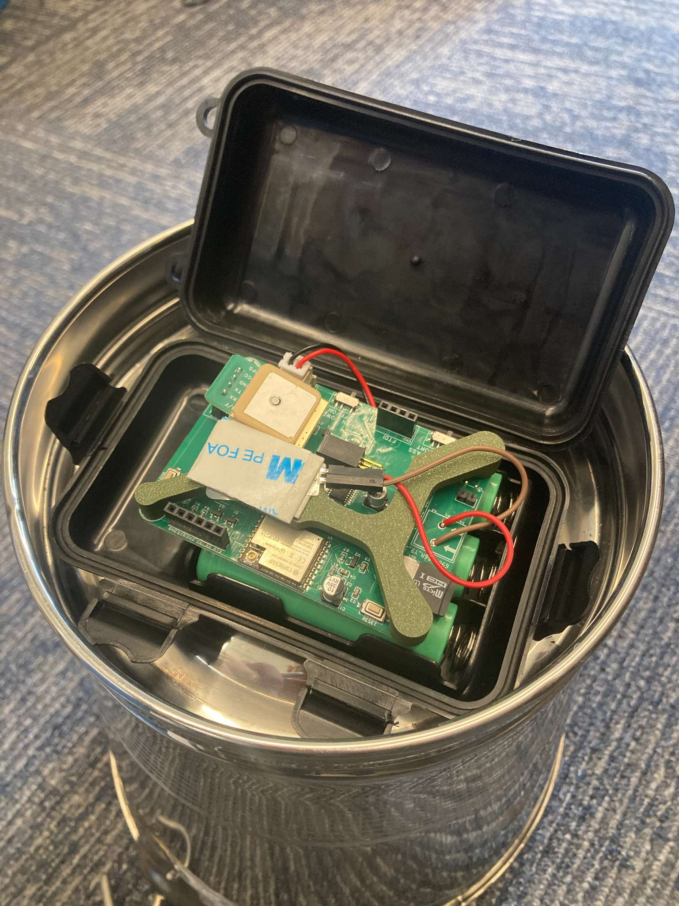
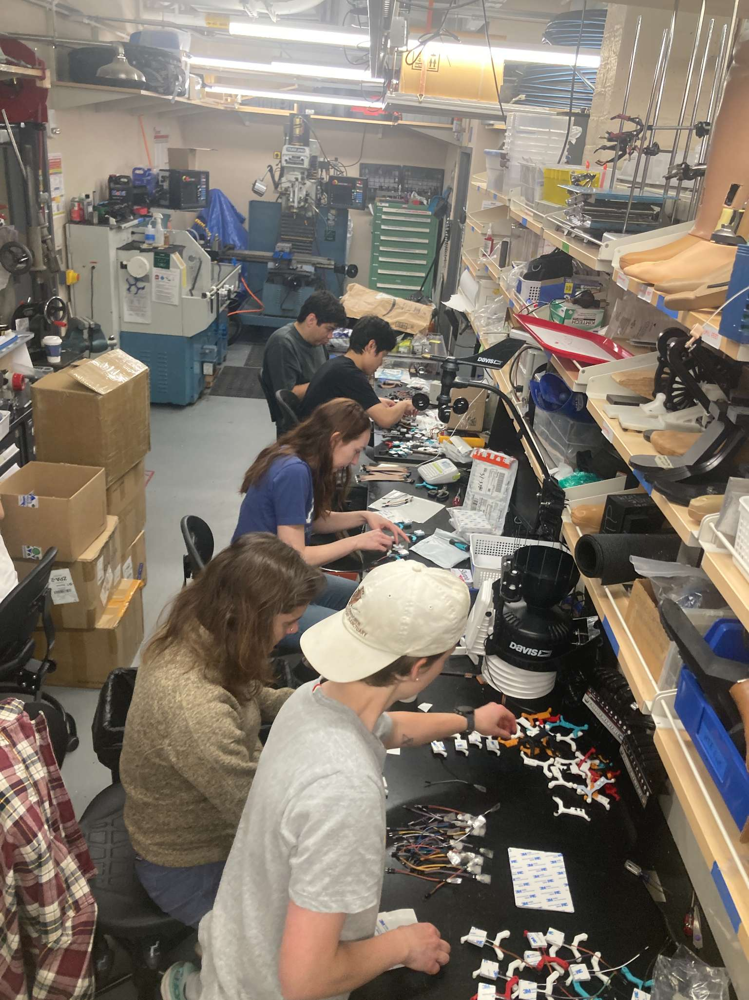
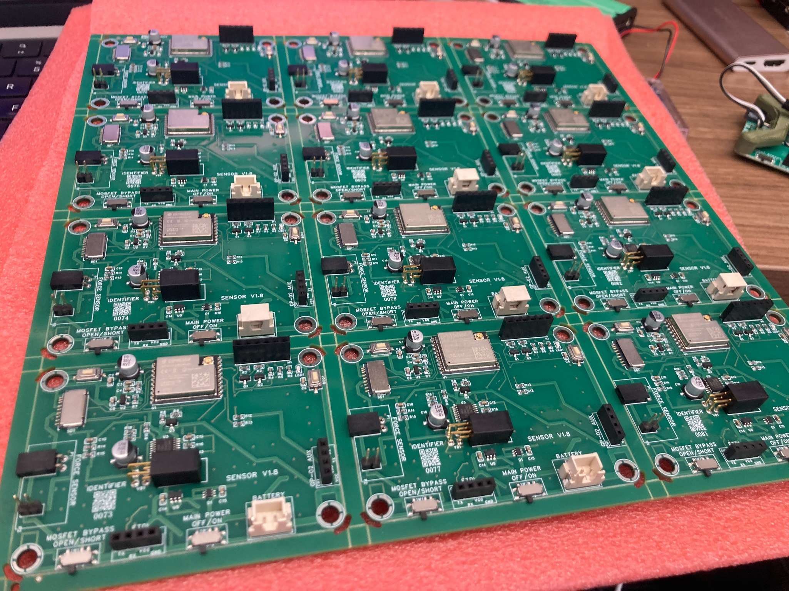
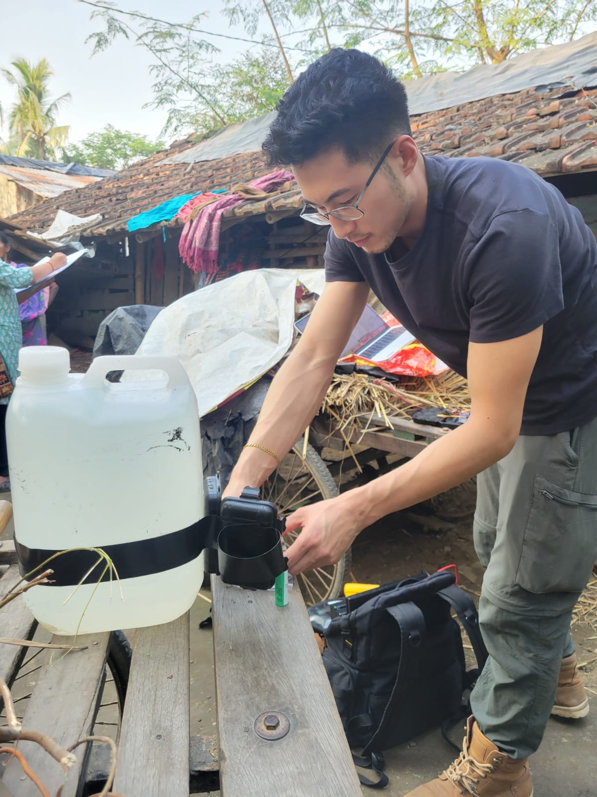

Smart Buckets.
Background
Water fetching is a daily reality for millions in rural and low-income regions globally. This significant physical and time-intensive burden predominantly falls upon women and children, walking miles every day to secure a basic necessity. This systemic imbalance fuels deep-seated economic and gender disparities: children are frequently forced to miss school, while women are deprived of opportunities for paid work or further education.
Problem
Despite the severity of this issue, quantifying the true extent of the water-fetching burden is notoriously difficult. Traditional data collection relies on infrequent surveys and large-scale censuses, which are expensive to conduct and often fail to reach the most isolated populations. Without high-frequency, accurate data, it is nearly impossible for policymakers to design infrastructure that effectively meets the needs of these communities.
Solution
To bridge this data gap, engineer Jon Bessette and social scientist Gokul Sampath teamed up to develop "Smart Buckets"—low-cost (<$20) IoT sensors designed to be retrofitted onto existing water containers. Sponsored by the Abdul Latif Jameel Water and Food Systems Lab (J-WAFS), the team deployed over 600 sensors in West Bengal, India, proving that high-resolution data can be collected unobtrusively to solve water access challenges.







